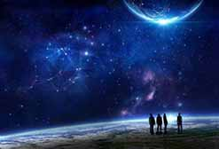
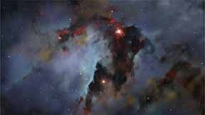
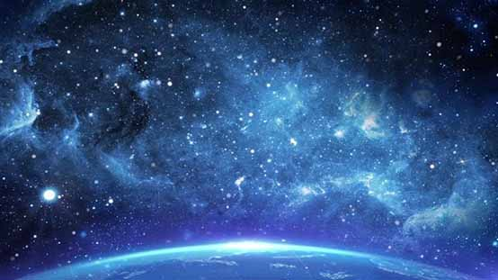

I love stars . I think they are the most beautiful things in the world .
Physical and Mathematical Science
 Mathematical science is a basic discipline in natural science as well as the forerunner and foundation
of contemporary scientific development.
While developing itself, mathematical science also provides theories, methods and means for the
development of other disciplines.
The research results of mathematical science play a central role in promoting the development
of basic and applied disciplines.
Physics studies the most basic forms and laws of motion of everything from the universe to
elementary particles,so it has become the research basis of other natural science disciplines.
Mathematical science is a basic discipline in natural science as well as the forerunner and foundation
of contemporary scientific development.
While developing itself, mathematical science also provides theories, methods and means for the
development of other disciplines.
The research results of mathematical science play a central role in promoting the development
of basic and applied disciplines.
Physics studies the most basic forms and laws of motion of everything from the universe to
elementary particles,so it has become the research basis of other natural science disciplines.I love Physics and Mathematics , because by doing experiments and making logical reasoning I can get the laws of everything in the world .I think it is amazing ! And I would like to put my heart into it to seek truth .
Information Technology


The video is about my favourite film. Hawking once said that the universe itself is a poem. Besides, he especially likes Wagner's opera, literature and music. Russell is not only a mathematician, but also an essayist. China's Zhao Shuang and Zu Chongzhi have not only made great contributions to mathematics, but also made great achievements in literature. Therefore, science and humanities should not be independent parts. I have always had a wish to realize the perfect combination of science and humanities. Because I think science and humanities are inseparable and integrated. Whenever I look up at the starry sky, I think that it is not only the source of literary creation, but also the inexhaustible motive force of scientific discovery. I like the starry sky overhead, where all my hopes are hidden, waiting for me to run to them. My major is information technology, which has become more and more important in modern society. It can give attention to both science and humanities. I think I can use the computer as a medium to develop more convenient and humane products, so as to better benefit the society and make my wish come true.



Humanities and Social science
 Different genres, such as poetry, prose, novels, dramas, plays, fables and fairy tales, are important
forms of literature.
Literature expresses inner feelings in different forms, namely genre, and reproduces social life in a
certain period and region.
Social science is the science of studying various social phenomena like Sociology ,History ,Politics .
I love Literature and History , because they can let me know the unique local customs and practices of
each era .
Moreover , the colourful language description attracts me very much.I think it is wonderful !
And I would like to read more books in my spare time .
Different genres, such as poetry, prose, novels, dramas, plays, fables and fairy tales, are important
forms of literature.
Literature expresses inner feelings in different forms, namely genre, and reproduces social life in a
certain period and region.
Social science is the science of studying various social phenomena like Sociology ,History ,Politics .
I love Literature and History , because they can let me know the unique local customs and practices of
each era .
Moreover , the colourful language description attracts me very much.I think it is wonderful !
And I would like to read more books in my spare time .